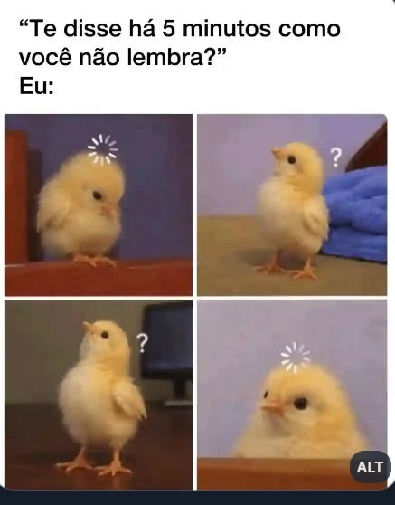

Quando o código funciona de primeira
Por: Rei dos Memes
Aquela sensação de desconfiança quando você aperta "Run" e não aparece nenhum erro vermelho na tela. Será que é mágica?
Os melhores e mais engraçados memes da internet reunidos em um só lugar

Por: Rei dos Memes
Aquela sensação de desconfiança quando você aperta "Run" e não aparece nenhum erro vermelho na tela. Será que é mágica?

Por: Rei dos Memes
Eu tentando explicar para o meu cérebro que o final de semana acabou e que já está na hora de levantar da cama.